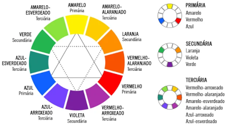

A História da Internet
A internet nasceu durante o período da Guerra Fria, na verdade ela nasceu exatamente pra cumprir objetivos durante a guerra fria. A guerra fria aconteceu porque duas grandes potências no final da grande guerra sairam fortalecidas da guerra os EUA e a União Soviética, o problema é que eles acabaram travando uma disputa entre eles, isso aconteceu na época de 1949, essa guerra na verdade foi mais uma disputa mental do que física.
Quem saiu na frente nessa guerra foi a União Soviética em 1969, ela lançou o Sputnik, o Sputnik foi o primeiro satélite artificial que foi lançado. Os EUA pensou que o Sputinik era um satélite lançado para espionar, depois de muitos anos descobriram que o Sputnik só tinha uma função fazer voltas em torno do planeta e cair na água, enquanto ele fazia essas voltas ele emitia bips, que informava a União Soviética, ou seja era somente para captar informações.
O presidente militar na época Dwight Eisenhower preocupado com a evolução tecnológica da União Soviética que nessa época tinha muito mais tecnologia que os EUA, ele fundou um orgão, uma agência para estudo de tecnologia para guerra, o nome dessa agência era Darpa. A primeira tecnologia criada pela Darpa foi ainda em 1969, e ela visava resolver uma preocupação enorme que os EUA tinha, ter um lugar que pudessem fazer backups de suas informações que constavam nos centros militares, caso algo acontecesse.
Pensando nisso eles criaram uma pequena rede a Arpanet, a Arpanet começou com quatro pontos, os computadores que existiam na época era o SDS Sigma 7 da universidade da Califórnia, um SDS 90 na universidade de Stanford, o IBM 370/75 no centro de matemática de Los Angeles, o único computador militar da época era um DEC PDP-10 na base militar de Utah. Basicamente eles queriam juntar as informações desses quatro computadores e fazer um backup, além de poderem se comunicar e trocar informações, pensando nisso a universidade de UCLA criou um protocolo, esse protocolo chamava NCP ele criou uma linguagem própria para que todos pudessem se entender, o problema que esse protocolo era simples e ruim e quando dois computadores queriam transmitir, a rede toda parava e só era liberado quanto eles terminavam, ou seja ninguém mais usava. A rede cresceu e em 1970 já atravesava os EUA, o problema é que não existia satélite, toda essa conexão era feita através de cabo. Em 1972 já tinha crescido o dobro, mas estava ficando impossível continuar utilizando esse recurso.
Foi ai que dois pesquisadores criando dois protocolos que depois se uniram, o Bob Kahn criou um protocolo chamado TCP, a ideia era resolver o problema de ter que parar a rede para fazer uma trasmissão, esse protocolo tinha um problema porque o número de pontos de computadores já estava muito grande e eles não conseguiam identificar esses pontos. Foi ai que entrou outro pesquisador o Vint Cerf que criou o protocolo de identificação de máquinas o IP, juntando o trabalho dos dois pesquisadores foi criado o protocolo TCP/IP que é o mesmo protocolo que usamos até hoje, mas já estamos na versão 6 desse protocolo. Em 1977 foi criada a primeira comunicação via satélite e ela aconteceu com a universidade de Londres. Com isso a Arpanet cresceu tanto que os militares decidiram não cuidar mais dessa rede, então eles dividiram ela, a parte militar ficou com uma rede menor chamada Milnet, a parte científica ficou com uma rede chamada NSFNET e também existiam varias redes comerciais que se chamavam Interconnect Networking que de forma abreviada ficou Internetworking que depois foi abreviada ainda mais e surgiu o termo Internet. Então a internet veio da Arpanet que surgiu pra proteger dados militares.
Como era a internet? Em 1993 em Genebra o inglês Tim Berners_Lee criou o protocolo chamado HTTP, e o HTML que foi baseado no HTTP, e o WWW também foi criado por ele. O primeiro navegador compatível com o protocolo HTML foi o Mosaic criado por Marc Andreessen, graças a esse conjunto a World Wide Web se tornou realidade. A internet é a rede mundial, dentro dela temos alguns servidores especializados, o FTP é especializado em transferência de arquivos, o Gopher é mais antigo e era especializado em hipertextos simples, o SMTP, POP3, IMAP é especializado em receber e enviar e-mail, e a servidores especializados em HTTP. WWW é uma sigla o conjunto especializado em http que é uma subrede da intenet.
Como a internet funciona
Representação de dados
O computador funciona com sinais, esses sinais pra computação são representados como 0 e 1, na verdade esses sinais são representados como ondas quadradas com sinais elétricos com ou sem sinais, sendo 1 com sinal e 0 sem. O conjunto O e 1, são chamados dígitos binários que vem do inglês (binary digit) ou abreviado bit, a tecnologia reúne uma porção de 8 bits que é a porção mínima para que se represente algum dado. Essa sequência de 8 bits (01000001) é chamada de bytes. 8 bits = 1 byte, 1024 bytes = 1KB, 1024 KB = 1MB, 1024 = 1GB, 1024GB = 1TB (MB = Megabytes para armawenamento, Mb = Megabits para transmissão).
Como nos conectamos
O computador reconhece e suporta sinais de onda quadrada, o telefone por exemplo aceita sinais de onda senoidal, para que os dois se conectem existe o modem, ele tem a função de transformar o sinal na onda quadrada para senoidal esse processo chamasse MOdulação, e de senoidal para quadrada esse processo chamasse DEModulação, dai o nome MODEM.
Como acessamos servidores?
Acessamos servidores através de IP. A "agenda" da internet é o que faz as ligações entre os números de IP e os nomes dos site. Nos o chamamos de servidor DNS.
O que é Domínio e Hospedagem
O domínio tem: Um nome único - É pago anualmente - Vários TLDs
Hospedagem: Espaço para armazenar arquivos - Pago mensalmente - Espaço, memória, recursos
URL: O www.github.com/gustavoguanabara é uma URL dentro de uma URL temos partes: O www é o sub-domínio.
O github.com é o domínio. O .com é o TLD. O gustavoguanabara é o caminho
A diferença entre HTML e CSS
Eu desenvolvo em HTML e CSS, essas não são linguagens de programação, então não devemos dizer eu programo e sim eu desenvolvo. HTML = Hypertext Markup Language. CSS = Cascading Style Sheets. No HTML trabalhamos com o conteúdo: textos, imagens, vídeos, tabelas. No CSS trabalhamos com design: cores, sombras, tamanhos, posicionamento. No JavaScript trabalhamos com interações: menus, animações, popups.
Exemplo de conteúdo HTML:
O <h1>Ex de Título </h1>: O <h1> é a abertura da tag, O Ex de Título é o conteúdo, O </h1> é o fechamento da tag.
O <img src="foto.png" alt="Ex de Foto">: O <img é a abertura da tag, O src e alt é o parâmetro, O Ex de Foto é o valor. Essa tag não possui tag de fechamento.
Exemplo de conteúdo CSS:
O h1 {font-family: arial; font size: 20pt; color: blue;}: O h1 é o seletor, O font-family: arial; font size: 20pt; color: blue; é a declaração, font-family: - font size: - color: é a propriedade, O arial - 20pt - blue é o valor.
Front-end, Back-end, Full stack
Front-end é especialidado em client-side. Back-end é especializado em server-side. Full Stack é especializado em cliente-side e server-side.
Cores em CSS
Representação por códigos Hexadecimais
Ex: background-color: #0000ff; color: #ffffff; Decimal: 0 1 2 3 4 5 6 7 8 9; Hexadecimal: 0 1 2 3 4 5 6 7 8 9 A B C D E F;
Representação em RGB (red, green, blue)
Ex: background-color: rgb(0, 0, 255); color: rgb(255, 255, 255);
Representação por HSL (Hue, Sturation, Luminosity)
Ex: background-color: hsl(240, 100%, 50%); color: hsl(0, 0%, 100%);
Psicologia das Cores
| Cor | Associada a | Usar em | Evitar |
|---|---|---|---|
| Vermelho | amor, emoção, energia, raiva perigo | comida, moda, entretenimento, serviços de emergência e saúde | luxo, natureza, serviços em geral |
| Amarelo | felicidade, alegria, otimismo, covardia | dar luz, dar calma e felicidade; chamar atenção | pode indicar que algo é barato ou span |
| Laranja | divertimento, ambição, calor, cautela | comércio, eletrônico, entretenimento, call-to-action | pode se tornar cansativo se muito explorado |
| Verde | saúde, natureza, dinheiro, sorte, inveja | relaxamento, turismo, financeiros, meio ambiente | luxo, tecnologia, meninas adolescentes |
| Azul | competência, sabedoria, calma, frio | tecnologia, medicina, ciências, governo | comida (reduz apetite) |
| Roxo | criatividade, poder, sabedoria, mistério | produtos de beleza, astrologia, ioga, espiritualidade, adolescente | não prende muito a atenção, indiferente |
| Marrrom | terra, robustez, estabilidade, amizade | alimentação, imobiliária, animais, finanças | cor considerada conservadora |
| Branco | pureza, limpeza, felicidade, segurança | medicina, saúde, tecnologia, luxo (com preto, ouro e cinza) | não chama atenção, deve ser combinado |
| Preto | elegância, autoridade, mistério, morte | luxo, moda, marketing, cosméticos | desconforto e medo |
| Cinza | formalidade, sofisticação, frieza, indiferença | bens de luxo, efeito calmante | sensação de frieza |
| Rosa | amor, romance, sinceridade, cuidados | produtos femininos e cosméticos | pode tornar muito sentimental e doce |
Harmonia de Cores
Círculo Cromático
Cores Primárias = Amarelo, Vermelho e Azul. Cores Secundárias = Laranja, Violeta e Verde. Cores Terciárias = Amarelo-esverdeado, amarelo-alaranjado, vermelho-alaranjado, vermelho-arroxeado, azul-arroxeado, azul-esverdeado. Junção de uma cor primárias e secundárias

Temperatura de Cores
Cores quentes = A direita. Cores frias = A esquerda
Cores Complementares
Cor oposta no Círculo Cromático = ex: violeta e amarelo, vermelho e verde
Cores Análogas - Cria um dégradé sem contraste
Cores vizinhas = ex: violeta, vermelho-arroxeado e azul-arroxeado
Análogas e complementares - Cria contraste
Cores análogas + cor complementar = ex: violeta, vermelho-arroxeado e azul-arroxeado + amarelo
Cores Análogas relacionadas - Pouco contraste
Ex: Amarelo, amarelo-alaranjado, vermelho-alaranjado
Cores Intercaladas
Ex: Amarelo, laranja, vermeho
Cores Triádicas
Forma um triângulo = Ex: Amarelo, vermelho, azul
Cores em Quadrado
Forma um quadrado = Ex: Amarelo, vermelho-alaranjado, violeta e azul-esverdeado
Cores tetrádicas
Forma um retângulo = Ex: verde, vermelho, laranja e azul
Monocromia
Uma única cor = Modificar somente a saturação e luminosidade
Estudo básico de Tipografia
O termo tipografia surgiu no século XV, quando surgiu a imprensa. Na europa na Idade média, quem produzia os livros eram os Monges Copistas, ele se especializava em copiar livros. Foi em 1950 que o inventor Alemão Johannes Gutenberg, inventou a Prensa Mecânica de Tipos Móveis. Por isso ele é conhecido como pai da imprensa. Os tipos moveis tiveram versões de metal, madeira, argila e cortiça. O termo tipografia vem de duas palavras gregas typos que significa impressão a arte de colocar algo no papel e graphia que significa escrita.
Anatomia dos Tipos
A letra x é o ponto de partida para construção de todas as fontes. Altura-x = é a altura base das letras minúsculas. A altura das maiúsculas = é a altura das letras maiúsculas. Ascendetes = é o tamanho do vazamento entre a letra minúsculas e maiúsculas pra cima. Descendente = é o tamanho do vazamento entre a letra minúsculas e maiúsculas pra baixo. Corpo = é a altura total das letras.
Anatômicos Corporais e Anatômicos Geométricos
Trabalhando com Fontes
Medidas Absolutas
cm, mm, in, px, pt, pc
Medidas Relativas
em, ex, rem, vw, vh, % - 16px geralmente = 1em
Tipos de Fontes -> Format ()
- opentype (otf)
- truetype (ttf)
- embedded-opentype
- truetype-aat (Apple Advanced Typography)
- svg
Pseudo-Class - Seletores Personalizados
# = id
. = class
: = pseudo-class
> = children
Tipos de Caixas
Box-level
Sempre se inicia em uma linha nova, sempre ocupa a largura total da tela e depois quebra pra próxima linha. Ex de box-level (div, h1...h6, p, main, header, nav, article, aside, footer, form, video)
Inline-level
Ele fica ao lado, não pula pra próxima linha, desenha a caixa do tamanho exato do conteúdo e depois não quebra a linha. Ex de inline-level (span, a, code, small, strong, em, sup-sub, label, button, input, select)